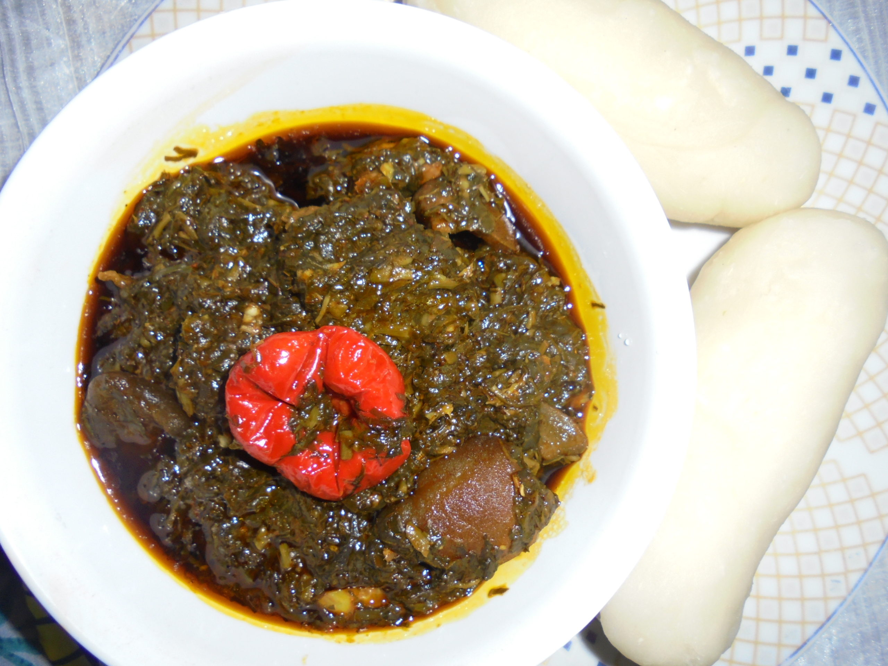
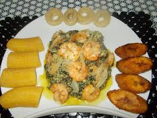

Nous nous y sommes rendu un vendredi soir en amoureux prix très accessibles pour un restaurant gastronomique
Très bon,Le menu était délicieux,Les vins aussi
Très bon,service rapide et super bon,rien à redire
Un petit lunch entre amis avec un delicieux poisson en plat,un vin blanc conseillé par le patron,à refaire dès que possible....
Beau restaurant installé le long de l'eau. Personnel très professionnel et surtout cuisine raffinée
Le chef a encore ravi nos papilles! Que ça soit par le forfait vin,avec un serveur très conciliant selon les goùts,que par le menu 3 services